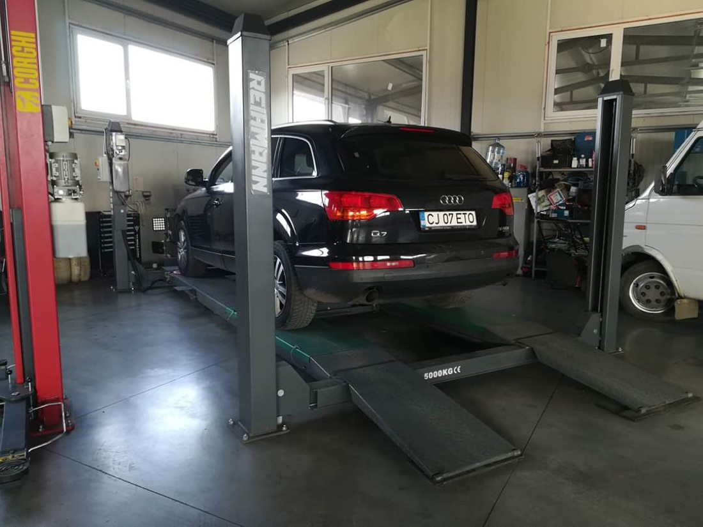

For cars, SUV 4×4 and vans up to 3.5 t. Fast, fair and by appointment — and at the end we remind you for free when the next expiry is coming up.

To save time, bring the documents below. That's all — we'll handle the rest.
The registration certificate (talon) and valid RCA insurance. We also recommend the owner's ID.
On average 20–30 minutes for a passenger car, if the vehicle meets the technical conditions.
For passenger cars, generally 2 years. For taxis, passenger transport or older vehicles, validity may be 1 year or 6 months.
Pick a time, come to the station, leave with the inspection done. Simple.